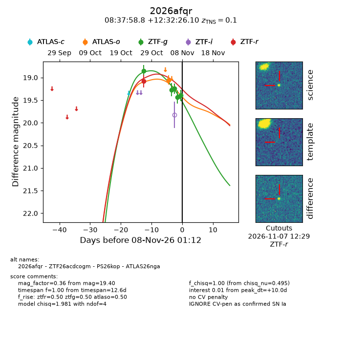
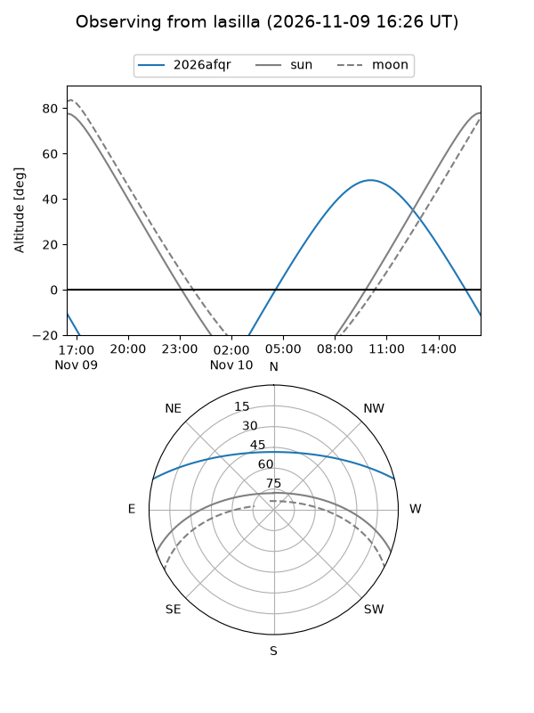
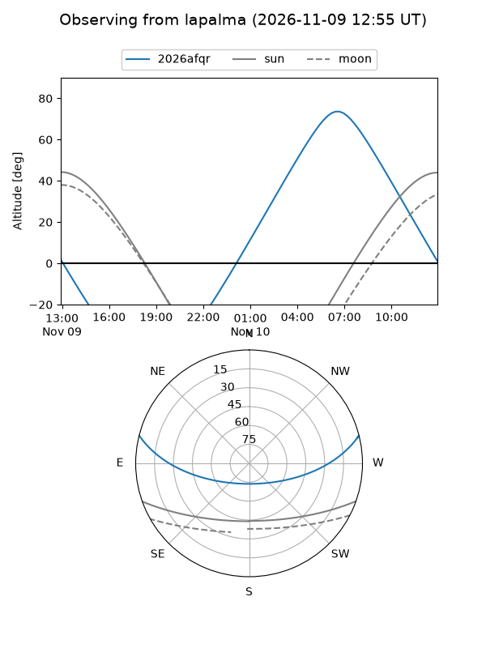
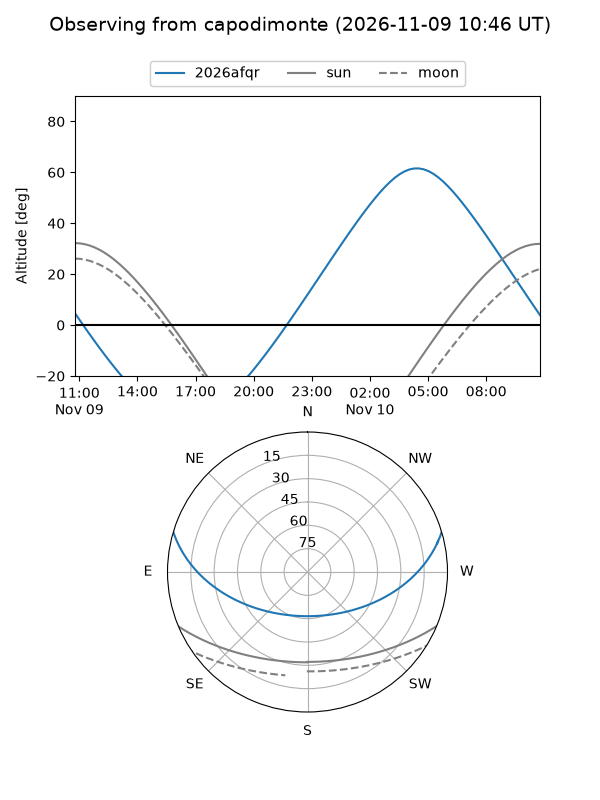
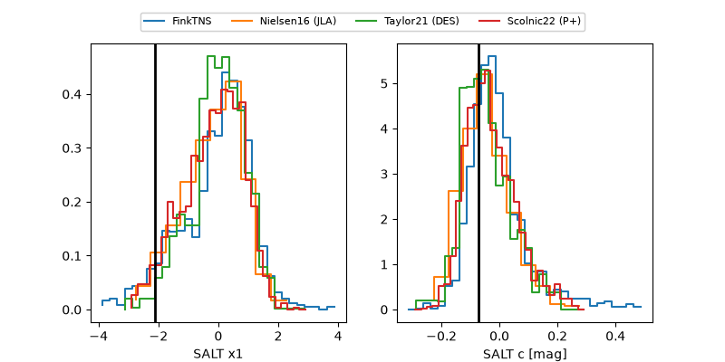

2026afqr
Target 2026afqr at 2026-11-08 01:14
Aliases and brokers:
FINK-ZTF: ztf.fink-portal.org/ZTF26acdcogm
Lasair-ZTF: lasair-ztf.lsst.ac.uk/objects/ZTF26acdcogm
ALeRCE-ZTF: alerce.online/object/ZTF26acdcogm
YSE-PZ: ziggy.ucolick.org/yse/transient_detail/2026afqr
TNS name: wis-tns.org/object/2026afqr
Direct TNS query: direct search
alt names
ZTF26acdcogm (ztf,fink_ztf)
2026afqr (tns,yse)
ATLAS26nga (atlas)
PS26kop (panstarrs)
Coordinates:
equatorial (ra, dec) = 129.4951,+12.54058
equatorial (HMS+DMS) = 08:37:58.82,+12:32:26.10
galactic (l, b) = (213.3458,+29.24099)
Flags:
TNS type: SN Ia
TNS redshift: 0.1000
peak dt: +10.0
Photometry:
last atlaso=19.05, ztfg=19.40, ztfr=19.08
1 atlaso, 5 ztfg, 1 ztfr detections
Lightcurve

Visibility



Additional plots
